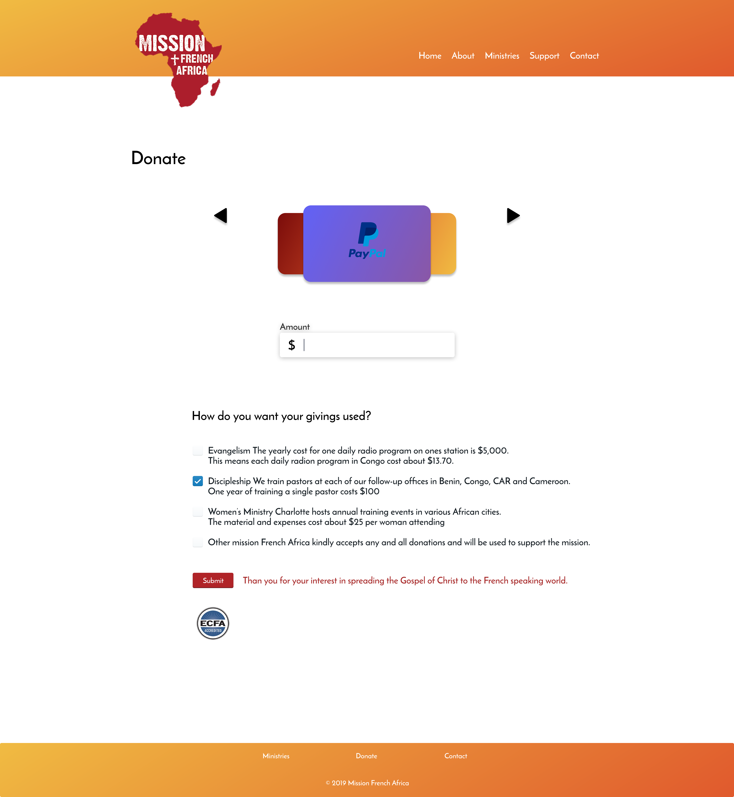
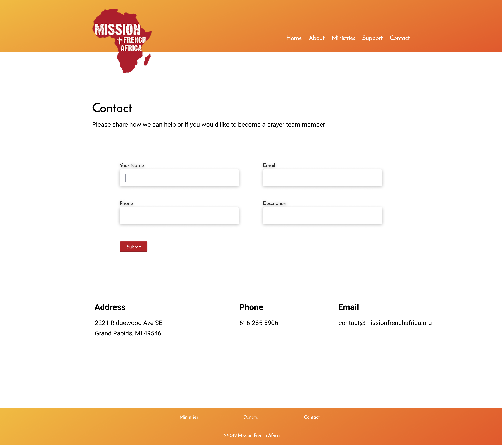

Mission French Africa
December 2019Problem
Mission French Africa’s website is outdated, and needs better usability. The goal is to update and increase functionality for visitors.
Context
Mission French Africa is a non profit organization that needed an update. The website had an old and unorganized look.
Objective
I was responsible for reorganizing and updating the UI of Mission French Africa’s website. The whole process took 5 weeks.
Website Audit
Home
A lot is happening on the home page. Keeping design simple is always a great bet. I sought to decrease the clutter and highlight the important parts to the page.
New

About
There is no need to have two pages for the about section. A better layout can offer all the information without needing to toggle between both.
New

Ministries
There is no need to have three pages for the Ministries section. Again, a user will want to view all Ministries at once, and click into each for more information.
New

Donate
The old website made my eyes bounce around, and I did not know where to focus my attention. The Donate page needs an obvious call to action with a variety of payment options and a clear process.
New

Contact
The contact page is already well put togehter, but the new one follows some basic UI design principles. I also added the address to this page to complete the contact info.
New
